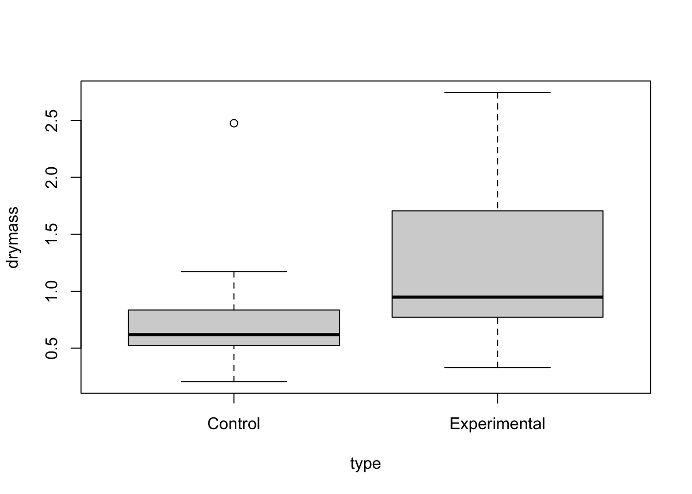
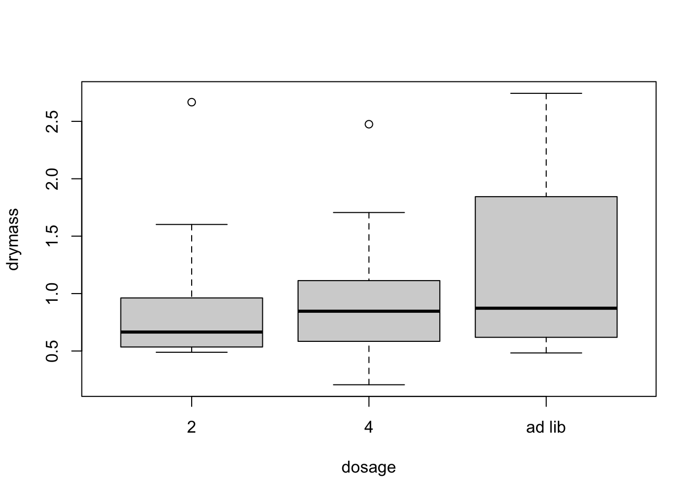
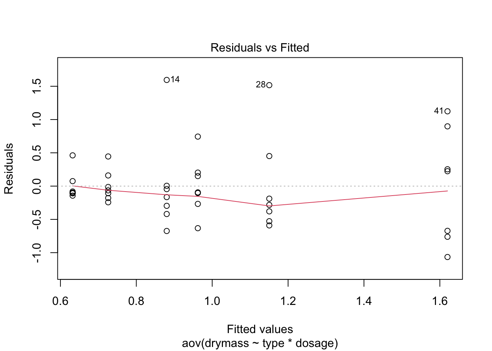
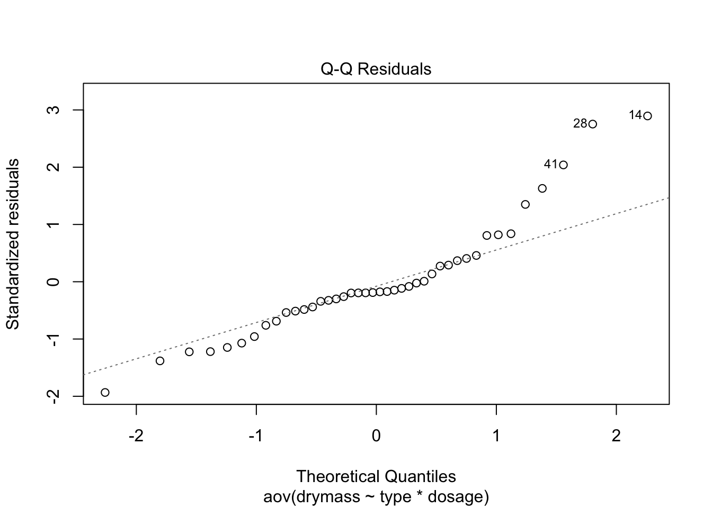
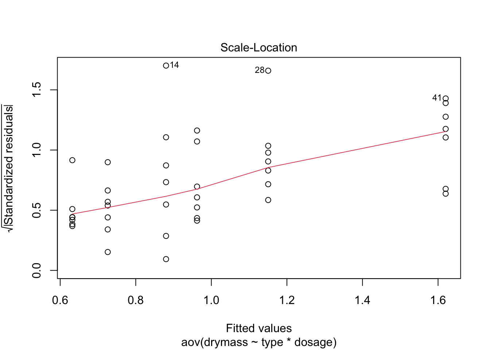
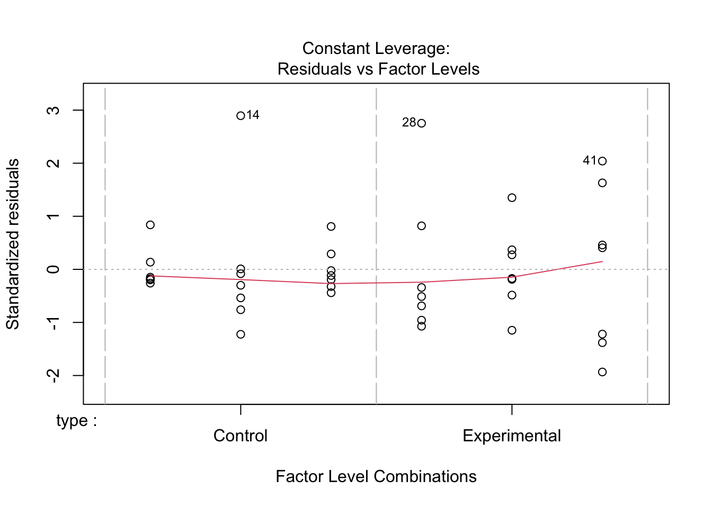
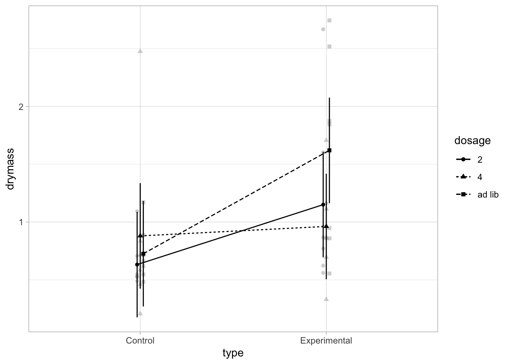
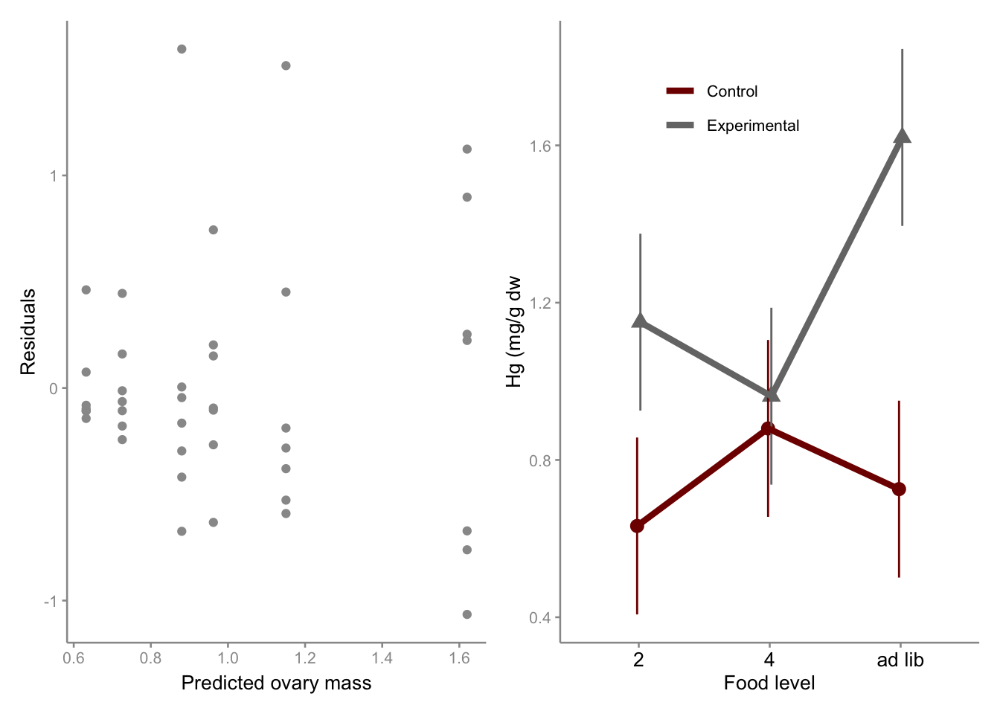

{kind=link}
library(tidyverse)
library(sjstats)
library(effectsize)
library(afex)
library(emmeans)
library(ggsci)
library(patchwork)QK Box 7.1
Linton et al. (2009) studied the effects of the insecticide pyriproxyfen on ovarian development in an endemic Christmas Island land crab, Geocarcoidea natalis. The insecticide was proposed as a means of controlling numbers of an introduced ant species that was viewed as a major threat, and it is an endocrine disruptor. The experiment was designed to test whether the insecticide might pose risks to the crabs, which have a hormone similar to the one targeted in insects, and consisted of feeding crabs a mixture of leaf litter and a bait. Half of the baits contained the insecticide, and the other half were controls (bait type factor). The baits were supplied at three rates, with two levels corresponding to levels used in field applications (2 kg ha-1 and 4 kg ha-1), with the third rate being ad libitum feeding (bait dosage factor). The experimental units in this case were large plastic tubs, each containing a single female crab, and there were 7 crabs for each combination of factors. The response variable was the dry mass of the ovaries of each crab. A two-factor linear model (7.2) including the fixed main effects of bait type and bait dosage and their interaction was fitted to these data.
Here is the paper and the data
Linton, S., Barrow, L., Davies, C. & Harman, L. (2009). Potential endocrine disruption of ovary synthesis in the Christmas Island red crab Gecarcoidea natalis by the insecticide pyriproxyfen. Comparative Biochemistry and Physiology, Part A, 154, 289-97.
Preliminaries
Load packages
Import linton data file (linton.csv)
linton <- read.csv("data/linton.csv")
head(linton,10) type dosage drymass nitrogen
1 Control 2 0.524 3620
2 Control 2 0.535 4030
3 Control 2 1.094 6530
4 Control 2 0.525 3938
5 Control 2 0.707 4312
6 Control 2 0.551 3740
7 Control 2 0.489 3860
8 Control 4 0.461 4329
9 Control 4 0.584 5108
10 Control 4 0.715 5877Fit model to untransformed data and check residuals
Start with boxlplots. Too few reps for boxplot by cell so boxplot for each factor separately
boxplot(drymass~type,data=linton)
boxplot(drymass~dosage,data=linton)
linton.aov <- aov(drymass~type*dosage, data=linton)
plot(linton.aov)



No strong pattern in residuals or boxplots so examine analysis with untransformed data
summary(linton.aov) Df Sum Sq Mean Sq F value Pr(>F)
type 1 2.606 2.6060 7.360 0.0102 *
dosage 2 0.671 0.3353 0.947 0.3974
type:dosage 2 1.157 0.5784 1.634 0.2094
Residuals 36 12.747 0.3541
---
Signif. codes: 0 '***' 0.001 '**' 0.01 '*' 0.05 '.' 0.1 ' ' 1Get effect size measures (eta- and omega-squared (effectsize package)
eta_squared(linton.aov)# Effect Size for ANOVA (Type I)
Parameter | Eta2 (partial) | 95% CI
-------------------------------------------
type | 0.17 | [0.03, 1.00]
dosage | 0.05 | [0.00, 1.00]
type:dosage | 0.08 | [0.00, 1.00]
- One-sided CIs: upper bound fixed at [1.00].omega_squared(linton.aov)# Effect Size for ANOVA (Type I)
Parameter | Omega2 (partial) | 95% CI
---------------------------------------------
type | 0.13 | [0.01, 1.00]
dosage | 0.00 | [0.00, 1.00]
type:dosage | 0.03 | [0.00, 1.00]
- One-sided CIs: upper bound fixed at [1.00].Interaction plot
afex_plot(linton.aov, "type", "dosage", dodge=0.05)+theme_light()dv column detected: drymassNo id column passed. Assuming all rows are independent samples.
High quality figures
Residual plot
p1 <- ggplot(linton.aov, aes(x = linton.aov$fitted.values, y = linton.aov$residuals)) +
geom_point(color=sc) +
theme_classic(base_size = 10)+
theme(
axis.text = element_text(colour = ac),
axis.line = element_line(color = ac),
axis.ticks = element_line(color = ac),
)+labs(x = "Predicted ovary mass", y = "Residuals",
)Interaction plot
Use emmeans to get dataframe of means and se
emm1<-emmeans(linton.aov, ~type|dosage)
emm2<-as.data.frame(emm1)
emm2dosage = 2:
type emmean SE df lower.CL upper.CL
Control 0.6321429 0.2249031 36 0.1760182 1.088268
Experimental 1.1504286 0.2249031 36 0.6943039 1.606553
dosage = 4:
type emmean SE df lower.CL upper.CL
Control 0.8801429 0.2249031 36 0.4240182 1.336268
Experimental 0.9621429 0.2249031 36 0.5060182 1.418268
dosage = ad lib:
type emmean SE df lower.CL upper.CL
Control 0.7258571 0.2249031 36 0.2697324 1.181982
Experimental 1.6201429 0.2249031 36 1.1640182 2.076268
Confidence level used: 0.95 Means and error bars
pd=position_dodge(width=0.05)
p2<-ggplot(emm2,aes(x=dosage,y=emmean,shape=type, group=type, color=type))+
geom_point(position=pd,aes(shape=type), size=3,show.legend = FALSE)+
geom_errorbar(aes(ymin = emmean-SE, ymax = emmean+SE), width=0, position = pd,show.legend = FALSE)+
geom_line(aes(color=type), position=pd, linewidth=1.5)+
scale_color_uchicago(labels = c("Control", "Experimental"))+
scale_linetype_manual(values=c("solid", "solid"))+
labs(x = "Food level", y = "Hg (mg/g dw"
)+
theme_classic(base_size = 10)+
theme(
axis.text.x = element_text(color="black",size=10),
axis.text.y= element_text(color=ac),
axis.line = element_line(color = ac),
axis.ticks = element_line(color = ac),
)+
theme(
legend.position = c(.6, .95),
legend.justification = c("right", "top"),
legend.box.just = "right",
legend.margin = margin(6, 6, 6, 6),
legend.title = element_blank(),
)Combine figures
p1+p2